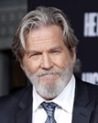

아이언맨 실사영화 시리즈의 첫 번째 작품이자 인피니티 사가의 첫 번째 작품, 나아가 마블 시네마틱 유니버스 대망의 첫 작품이다. 아마도 처음 마블 영화를 접할때에는 이 영화가 재미가 없다고 생각이 들 수 있지만, 마블과 아이언맨에 애정이 생긴 사람들에겐 '전설의 시작'이라고 불리우는 영화이다.
 |
 |
 |
 | |
|---|---|---|---|---|
| 존 파브로 (감독) |
로버트 다우니 주니어 (토니 스타크) |
기네스 팰트로 (페퍼 포츠) |
테런스 하워드 (제임스 로드) |
제프 브리지스 (오베디아 스탠) |
토니 스타크 : I AM IRON MAN.
페퍼 포츠 : 토니 스타크에게 따뜻한 가슴이 있다는 증거.
제임스 로드 : next time, baby!
인센 : 삶을 낭비하지 마세요.
사실상 지금의 마블 시네마틱 유니버스를 있게 해준 작품이라고 평가 받을만큼 MCU에서 중요한 위치에 있는 작품이다. 캡틴 아메리카 역의 크리스 에반스는 "다우니는 우리 모두를 여기까지 오게 해준 사람이다. 아이언맨1이 그렇게 성공하지 못했더라면 이후의 일은 일어나지도 못했을 것이다." 라고 평가하기도 했다.
그런데 당시 코믹스에서 아이언맨은 인기 캐릭터가 아니었다. 저조한 인지도의 아이언맨이 프랜차이즈의 첫 타자가 된 것에 많은 사람들이 의문을 표했었으나, 개봉 후부터 지금까지 아이언맨1이 MCU의 첫 작품이 된 것은 신의 한수였다고 손꼽히고 있다.
이 영화의 진정한 묘미는 때려 부수는 것이 아니라 만드는 것에 있다. 재수없는 이미지의 초일류 CEO 토니 스타크가 철 든뒤 직접 고군분투해가면서 슈트를 만드는 모습이 다른 히어로 영화에서의 '영웅이 되어가는 과정'과는 다른, 색다른 모습으로 찾아온다는 것이 이 영화의 큰 매력이다.
영화가 기존의 슈퍼 히어로물과 달리 '탄생 직후의 활약'을 그리는 게 아니라 '아이언맨이 탄생하는 과정'을 그리고 있는 것에 가깝기 때문에 토니 스타크는 개과천선하고 선행을 하려고는 하지만 이 작품에서 아직 그 선행이 본격적으로 나타나진 않는다. 처음부터 모든 능력을 얻고 난 다음을 그리는 영웅물과 달리 영화 중반까지 토니 스타크는 아이언맨 갑옷을 개량하며 자신을 완성시킨다. 덕분에 만드는 장면이 액션 씬보다 비중있고 매력있게 그려졌다.
또 다른 명장면은 엔딩 씬. 주인공이 자신의 정체를 세상에 당당하게 드러내는 일명 "I am Iron Man" 씬은 "주인공은 정체를 숨기고 활동한다"는 슈퍼 히어로 장르의 클리셰를 전면적으로 부정함으로서 관객들에게 카타르시스를 선사하였다. 이 대사는 기존 슈퍼 히어로 영화 그리고 원작이 되는 마블 코믹스와도 완전하게 다른 길을 가겠다는 마블 시네마틱 유니버스의 선언과도 같다.
엔딩 크레딧 이후 닉 퓨리가 등장해 어벤져스 떡밥을 날리는 장면을 보고 충격받은 팬이 한둘이 아니었다. 아예 '세계가 뒤집혔다.'고 얘기할 정도. 실제로 《아이언맨》이 개봉된 이후, 유명 잡지에서 "아이언맨 마지막에 등장한 닉 퓨리는 누구인가?"를 다룬 기사가 나왔다. 마블 영화 시리즈의 최초의 작품이자 최고의 성공작 중 하나이기도 하여 작품이 차지하는 의미가 남다른데 MCU 세계관 자체가 이 영화의 마지막 장면 이전과 이후로 나누어진다. 실제로 캡틴 아메리카:시빌 워에서도 비전이 직접 토니 스타크가 정체를 밝힌 이후 세상이 바뀌었다고 말하기도 한다. 여러모로 마블 영화 시리즈에서 매우 중요한 위치에 해당하는 작품.
이후로 마블 시네마틱 유니버스 영화가 계속 개봉되면서 본작이 점점 더 재평가를 받고 있다. 웬만하면 거의 수작이라고 평가받는 마블에서도 가장 명작이라며 "마블이 앞으로 넘을 고비는 아이언맨 1이다" 라는 말까지 나오는 중.
10년이 지난 후일 밝힌 바에 따르면 아이언맨이 첫 작품의 주인공이라는 중책에 당첨된 이유는 다소 싱겁게도 어린이들을 대상으로 한 장난감 선호도 조사에서 아이언맨이 1위를 차지했기 때문이라고 한다. 당시 아비 아라드와 케빈 파이기를 비롯한 마블의 경영진들이 어떤 캐릭터를 첫 영화의 주인공으로 삼을지 토론을 했는데 서로 합의에 이르지 않아서 결국 어린이들을 대상으로 한 시장조사를 통해 캐릭터를 선택한 것이었다.
개봉 당시 로버트 다우니 주니어가 내한을 했었지만 당시 한국에서는 씁쓸한 반응을 얻고 돌아갔다. 로버트 다우니 주니어가 엄청난 인기를 얻은 훗날 당시 내한이 재조명을 받았다.
쿠키 영상은 케빈 파이기가 시네마틱 유니버스를 구체적으로 구상하기전에 존 파브로 감독이 그냥 재미로 넣은 것이라 한다. 그런데 그것이 실제로 일어났습니다 제작 초기부터 그런 생각이 있었던 것은 아니고 어찌어찌 제작이 끝나고 나서 어벤져스 계획에 착수하게 된 것이다.
제작 당시 환경이 매우 열악하여, 로버트 다우니 주니어와 제프 브리지스, 그리고 존 패브로가 완성되지 않은 각본을 토대로 가히 쪽대본 촬영에 가까운 수준으로 수정과 추가를 하며 찍어 완성된 것이 이 영화였다. 심지어는 제작진 중 한명은 인터뷰에서 블록버스터 영화가 아닌 다른 영화를 찍는 줄 알았을 만큼 처참한 환경이었다고. 이러한 환경에도 로버트 다우니 주니어는 존 파브로와 함께 촬영장 지휘를 했다고 한다. 그러니까 잘못하면 첫 번째 영화가 제대로 망해서 마블 시네마틱 유니버스 자체가 나오지 못할 수도 있었을 것이라는 얘기. 괜히 로버트 다우니 주니어가 마블 시네마틱 유니버스의 일등공신 취급 받는 것이 아니다. 물론 그 당시만 하더라도 헐리우드의 문제아로 취급받고 흥행도 보장받지 못한 배우였던 로다주를 제작사에 반대에도 불구하고 그를 믿고 캐스팅 한 존 패브로와 수 년 전부터 큰 그림을 그려온 케빈 파이기를 빼놓을 수 없다.